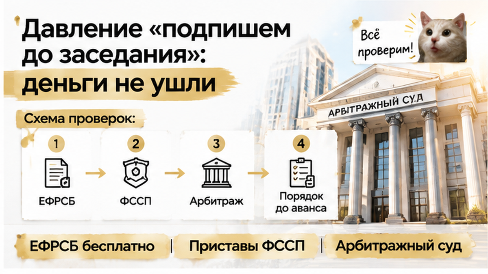
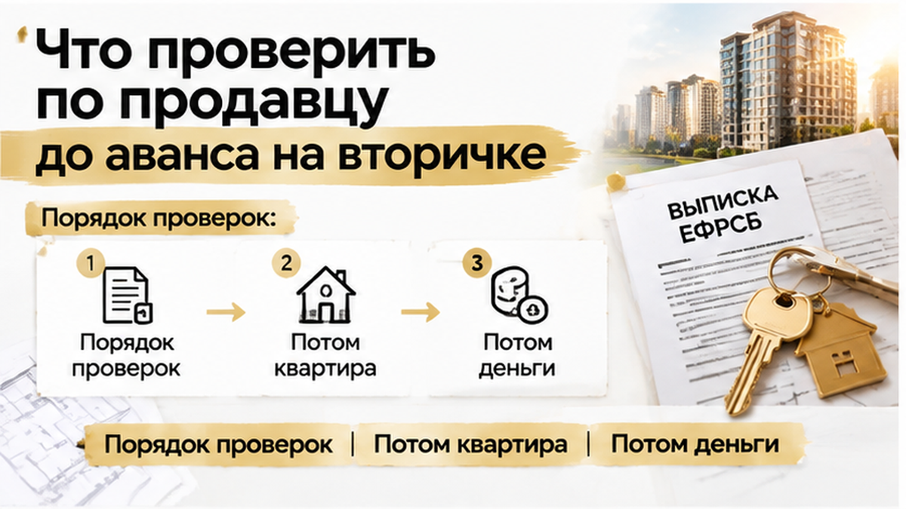
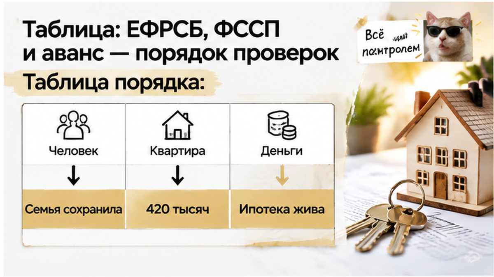

За шесть дней до аванса в 420 тысяч рублей тюменская семья с двумя детьми узнала, что продавец их будущей трёшки уже в банкротстве — и деньги так и остались на карте. Ипотеку одобрили, дата аванса стояла в календаре, дети уже спорили, кому достанется комната с балконом. Выписка из ЕГРН была чистой, продавец спокойно улыбался, а его риэлтор повторял, что квартира «без единого пятна». Всё всплыло на одной проверке, которую на тюменской вторичке до сих пор часто пропускают: по Росреестру пробили квартиру, а по реестру банкротств ещё и самого продавца. Дальше была неделя уговоров «подписать до заседания» и один твёрдый отказ, который сохранил семье 420 тысяч.
Я Святослав Шакин, The Риэлтор, Тюмень. Разбираю вторичку до аванса, а не после перевода денег. Смотреть разборы и задать вопрос можно в Telegram и MAX.
Трёшку семья искала несколько месяцев. Двое детей, двушка давно стала тесной, и главным условием была школа рядом. Эта квартира подошла почти по всем пунктам: нормальный дом, понятная планировка, цена укладывается в одобренную ипотеку. После одобрения всё закрутилось быстрее, чем семье было удобно. Одобрение живёт не вечно, продавец намекал на других покупателей, и аванс около 420 тысяч решили внести в ближайшие дни.
Для обычной семьи 420 тысяч — это не «задаток для приличия». Это накопления за пару лет, часть первоначального взноса и деньги на ремонт детской. Когда ипотека одобрена, аванс кажется формальностью: банк ведь проверяет, значит, всё в порядке. Только банк смотрит на заёмщика и на квартиру как на залог. Долги продавца, его суды и банкротство до аванса за покупателя никто целиком не проверяет. А аванс уходит продавцу напрямую, и если с ним что-то не так, возвращать деньги придётся уже без банка.
Первым делом семье показали свежую выписку из ЕГРН. Собственник один, арестов нет, ипотеки нет, запретов на регистрацию нет. Риэлтор продавца положил её на стол почти торжественно: «Смотрите, чистая, как слеза». Продавец держался уверенно: продаёт, потому что переезжает, отвечает коротко и без нервов. Никакой тревоги эта сцена не вызывала. В этом и была ловушка.
Чистая выписка говорит про квартиру, а не про человека. В ней видно залог, арест и запреты на объект, но не видно, что у собственника идёт дело о банкротстве. Строка в ЕГРН вообще может подвести, даже когда сделка почти прошла: мы уже разбирали, как ипотеку одобрили, а регистрацию отменили из-за одной строки в ЕГРН. Выписка нужна, но это только половина проверки.
Спокойный голос продавца тоже ничего не доказывает. Люди с проблемами редко выглядят как люди с проблемами: приходят вовремя, приносят бумаги, говорят правильные слова. Так было и в истории, где продавец показал справку о закрытии ипотеки, а банк всё ещё держал залог: бумага выглядела убедительно, пока её не сверили с источником. Эта семья собиралась подписать соглашение об авансе на той же уверенности. Остановило их не подозрение, а обычная привычка: до денег проверять не только квартиру, но и того, кто её продаёт.
До аванса оставалось шесть дней, и дата в соглашении уже стояла. Перед такими суммами я всегда проверяю не только квартиру, но и человека. Продавца я пробиваю по ЕФРСБ, федеральному реестру, куда публикуют всё о банкротствах, и по базе приставов. Выписка ЕГРН про это молчит: она рассказывает, что записано на квартиру, а что происходит с её хозяином, в ней не видно.
По фамилии, дате рождения и ИНН продавца в ЕФРСБ нашлась свежая публикация. Арбитражный суд признал его заявление обоснованным и ввёл реструктуризацию долгов. Это первая стадия банкротства гражданина. Назначен финансовый управляющий, стоит дата следующего заседания. Если по-простому, человек, который неделю назад спокойно водил нас по трёшке, по закону уже не мог продать её сам. Нужно письменное согласие управляющего, и получать его надо до сделки, а не «когда-нибудь потом».
Распечатку я привёз семье в тот же вечер, и разговаривали мы у них на кухне. Жена дважды перечитала слово «реструктуризация» и попросила объяснить без юридического языка. Я сказал так: если вы переведёте сейчас 420 тысяч, эти деньги могут уйти в общую кучу долгов продавца. Вы станете ещё одним кредитором в очереди, где перед вами уже стоят банки. А саму сделку, даже если до неё дойдёт, управляющий или кредиторы смогут оспорить в суде.
Муж сначала не поверил: «Выписку же мы сами заказывали, она чистая». Она и была чистой. Суд пока не накладывал арестов и залогов, поэтому в ЕГРН им взяться неоткуда. Банкротство записано в другом реестре. Если не заглянуть туда до денег, о нём расскажет уже управляющий, когда аванс давно потрачен.
Такие разборы сделок до аванса я выкладываю в Telegram и MAX: настоящие проверки, настоящие цифры и что спросить у продавца до перевода денег.

На следующий день я позвонил продавцу и прямо спросил про публикацию в ЕФРСБ. Отпираться он не стал, но повёл разговор так, будто речь о мелочи. По его словам, долги у него «рабочие», управляющий «свой человек», и всё решится, если подписать соглашение и получить аванс до следующего заседания. После заседания, мол, будет сложнее, так что тянуть не надо. Его риэлтор добавила ту самую фразу: «ЕГРН же чистая, чего вы боитесь».
Это классическое давление сроком. Человеку в банкротстве срочно нужны живые деньги, а чужой аванс для него самый простой способ их достать. Чем быстрее покупатель переводит деньги, тем меньше он успевает спросить. Письменного согласия финансового управляющего продавец так и не показал. Контакты управляющего дать отказался, а на предложение согласовать сделку официально ответил: «Это долго».
Семья решила за сутки. Аванс 420 тысяч не перевели, соглашение не подписали, а одобренную ипотеку банк спокойно перенёс на другой объект. Трёшку, где дети уже поделили комнату с балконом, пришлось искать заново, и это было обидно. Зато из этой истории они вышли с деньгами на счёте, а не с требованием в реестре кредиторов. Похожая развилка была у другой семьи, когда поддельное согласие супруги остановило сделку перед авансом. Там тоже спасло то, что бумаги проверили до денег, а не после.
Если за неделю до аванса всплывает банкротство продавца, а риэлтор говорит «ЕГРН же чистая», вы бы рискнули авансом или ушли сразу?

Спасла эту семью не удача, а пять минут на сайте. Выписка ЕГРН рассказывает про квартиру: кто хозяин, есть ли залог или арест. Про самого хозяина она молчит. Банкротство записывают в другом месте, в ЕФРСБ. Это открытый реестр на fedresurs.ru. Вбиваете фамилию продавца и дату рождения из паспорта, и через пару минут видно, идёт ли у него дело. Это бесплатно. Поэтому «ЕГРН же чистая» ещё не значит, что продавец чистый.
Почему смотреть надо именно до аванса. Если суд уже ввёл продавцу банкротство, продать квартиру сам он не может. Нужно согласие финансового управляющего, а на поздней стадии продаёт уже управляющий, не собственник. Аванс, отданный в этот момент, становится просто долгом банкрота перед вами. Вы встаёте в очередь кредиторов, и вернуть 420 тысяч быстро вряд ли получится. Даже закрытую сделку управляющий может потом оспорить. Закон позволяет пересматривать сделки должника за несколько лет до банкротства, особенно если цена была ниже рынка.
Ещё две проверки делаю в тот же вечер. Сайт приставов ФССП: крупные долги по кредитам и распискам часто видны там раньше, чем человек доходит до суда. Сама строка у приставов ещё не повод разворачиваться. Но долги на сотни тысяч вместе с «давайте подпишем до пятницы» — это тот же сигнал, что был у нашей семьи. И картотека арбитражных дел kad.arbitr.ru: по ФИО видно, подано ли заявление о банкротстве, даже если процедуру ещё не ввели.

Порядок простой: сначала человек, потом квартира, потом деньги. Не наоборот.
| Шаг | Где смотреть | Что ищем | Если нашли |
|---|---|---|---|
| 1. До встречи по авансу | ЕФРСБ (fedresurs.ru) | Сообщения о банкротстве продавца по паспортным данным | Аванс не переводим, говорим только вместе с финансовым управляющим |
| 2. Тот же день | kad.arbitr.ru | Поданное заявление о банкротстве, даже без введённой процедуры | Пауза до решения суда, деньги не отдаём |
| 3. Тот же день | Банк исполнительных производств ФССП | Долги, взыскания, суммы | До аванса выясняем, как и из каких денег закрывается долг |
| 4. Перед подписанием | Свежая выписка ЕГРН | Собственник, залог, арест, запрет регистрации | Сверяем с тем, что говорил продавец |
| 5. Только потом | Соглашение об авансе | Условие возврата, если всплывёт банкротство или арест | Без такого условия не подписываем |
Эта семья сохранила 420 тысяч не потому, что им повезло. Они просто поставили проверку продавца раньше перевода денег. Шесть дней оказались запасом, а не приговором. Ипотека осталась одобренной, и трёшка с балконом у детей будет — только в другом доме.
Вторичка в Тюмени не мина, если деньги идут последними. Так же было, когда за три дня до аванса всплыл долг за свет на 186 тысяч. Проверили до денег, и решение осталось за покупателем, а не за продавцом с его сроками.